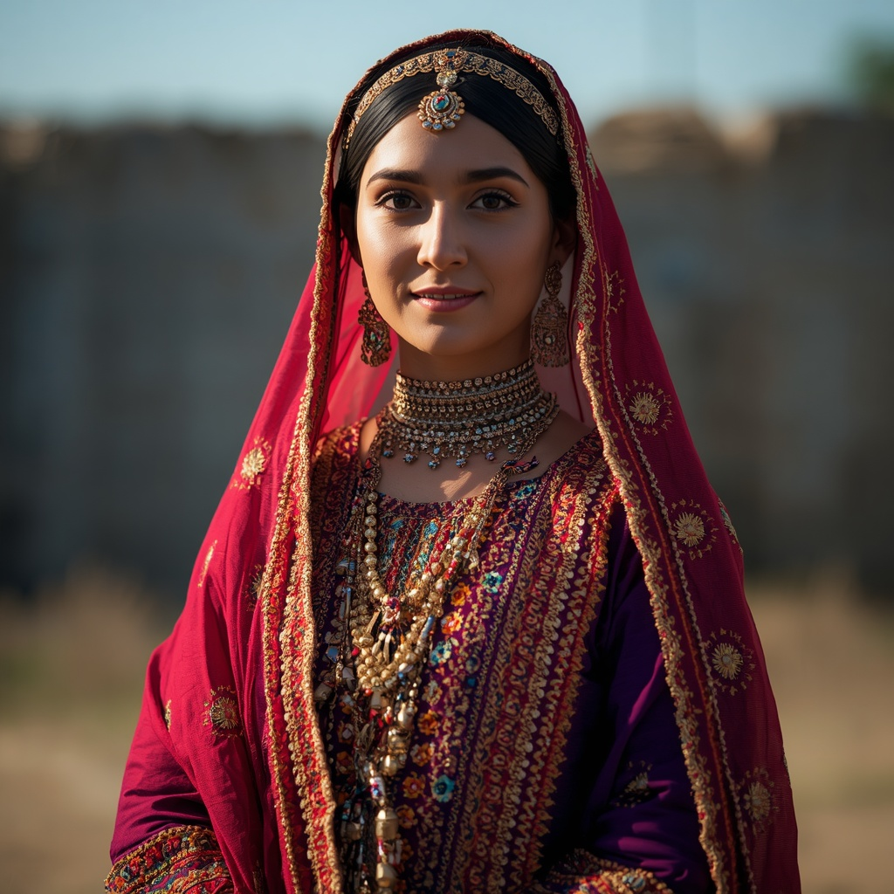

🧑🤝🧑 世界の民族・人びと
People of the World。国境を越えて暮らす人びとを、地域ごとに紹介します。伝統だけでなく、今の暮らしも一緒に。

クルド人
🗣 使用言語
クルド語(クルマンジー語、ソラニー語など)
👥 人口の目安
約3,000万〜4,500万人(トルコ、イラン、イラク、シリアにまたがる地域)
👘 伝統衣装
地域や部族によって異なる色鮮やかな民族衣装が伝わっており、婚礼などの祝い事では特に華やかな装いが用いられる。
🏠 住居
山間部の伝統的な集落では石造りや土造りの家屋が用いられてきた。
🍲 食文化
羊肉や鶏肉、米料理、乳製品を中心とした料理が日常的に食べられ、1日に何度も甘い紅茶を飲む習慣がある。
🎵 音楽・踊り
「デングベジュ」と呼ばれる語り歌いの伝統があり、悲喜劇的な物語を歌にのせて伝承してきた。
🎉 行事・祭り
春の訪れを祝う「ネウロズ」が最も重要な年中行事として広く祝われる。
🙏 信仰・価値観
大多数がスンニ派イスラム教を信仰し、シーア派やアレヴィー派の信者も少なくない。ヤズィード教やヤールサン教などクルド語圏に伝わる独自の信仰を持つ人々もいる。
📜 歴史
古代イラン系民族に起源を持つとされ、7世紀頃のアラビア語文献に「クルド」という呼称が現れる。12〜13世紀頃までに独自の民族的アイデンティティが形成され、各地に諸王朝を築いた。
🏙 現代の暮らし
トルコ、イラン、イラク、シリアにまたがる地域を中心に暮らし、ドイツやフランス、スウェーデンなど欧州にも大きな移民コミュニティを形成している。
🇯🇵 日本との関係
日本国内では埼玉県川口市・蕨市周辺に最大規模のクルド人コミュニティが形成されており、日本クルド文化協会などを通じて日本語教室や文化交流の活動が行われている。
🌍 関連する国


出典: https://en.wikipedia.org/wiki/Kurds(2026-09-01時点) / https://en.wikipedia.org/wiki/Kurdish_culture(2026-09-01時点) / https://ja.wikipedia.org/wiki/%E5%9C%A8%E6%97%A5%E3%82%AF%E3%83%AB%E3%83%89%E4%BA%BA(2026-09-01時点)